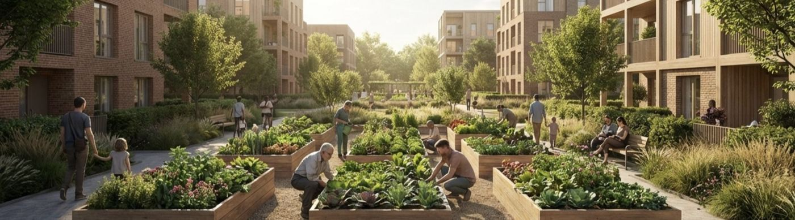
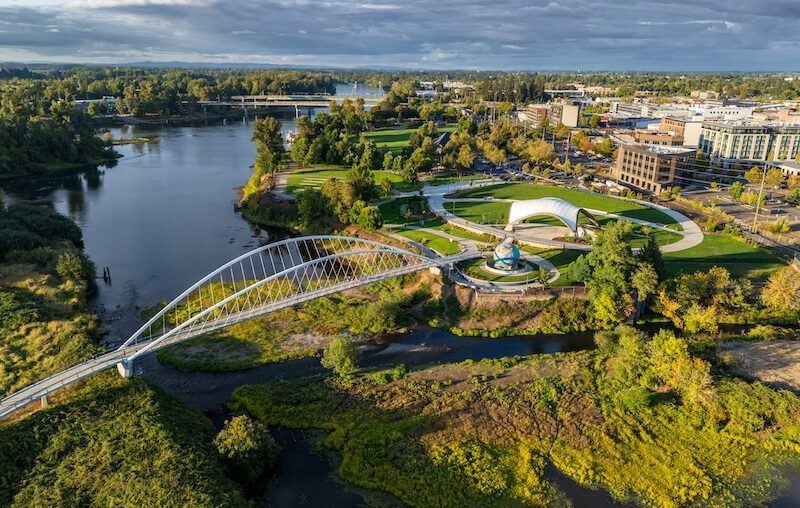

This site is shared with project stakeholders for discussion purposes. Enter the access code to continue.
Need access? Contact erik@nowcitylabs.com
Notes on the way we hope life here will feel.
Wonder. Joy. Gratitude. Peace. The sense that everything is right in the world, that we are loved and cared for, accepted as we are. Everyone has been somewhere that let those feelings in. We keep asking what those places have in common, and we are building toward the answers.
Where does wonder find us? In nature, mostly, and at every scale: moss after rain, a garden loud with bees, light moving on water, a valley turning gold in the fall. Beauty, color, movement, life in all its variety. So the plan is generous with nature: gardens at the center of every block, trees over every street, and paths that lead to the water.
When did we last laugh until late? At a long table, probably, with food that took all afternoon and people who stayed past dark. So the plan sets long tables: harvest dinners on the green, a market hall loud on a Friday night, someone's grandmother teaching someone's kid to press cider.
Which places slow us down? Gardens, mostly. A courtyard where the street noise falls away and the evening light comes in low, kids in the grass, dinner in no hurry. Every block here is drawn around one.
When have we felt most cared for? In small things, repeated: the coffee started before the order, the package taken in, a seat saved at the wood shop. Those grow wherever people keep crossing paths, and the whole plan, at bottom, is a way of making paths cross.
And once in a while it all lands at once: rain on the roof, a warm and noisy market, everyone we love within a short walk. The sense that everything, for now, is exactly where it should be. That is the feeling this neighborhood is aimed at.
Four days from the neighborhood, a few years in. The people are invented. The place is exactly as planned.
The kids go down to the courtyard on their own after breakfast. She can see them from the kitchen window, and so can four other parents, which is the point. Daycare is at the bottom of the stairs. She works two days a week at the campus, eleven minutes on foot, and buys dinner at the market hall on the way home from a farmer whose name she knows.
The thing she notices most, a year in: her attention came back. The family logistics she used to carry in her head all day got shorter, and the room that freed up filled with people.
He walks the river path early, when the herons are out. Lunch at the market, same stool. Two afternoons a week he runs the wood shop at the maker studios, teaching kids to sharpen a chisel, and they call him Walt, and they need him.
He knows the baristas, the butcher, the woman who runs the gallery. His old house had a big yard with only him in it. Here his life got smaller in square feet and bigger in every other way.
Her rent works because her car is gone. Pickleball league Mondays, run club Wednesdays along the water, and on Fridays her band plays the small stage at the food hall to forty people she mostly knows.
Everything she used to drive to Portland for happens within four blocks, and her Portland friends now come to her.
Rain on the river, dark at 4:30.
The market hall is full and loud and warm. Someone's kid is playing their first show. The sauna by the water has a waitlist, the winter lights are on in the courtyards, and the dark months have somewhere to be.
There is always something on: food and drink, craft, music, and sport, in every season. Come to everything or come to nothing; the seat is there either way.
A conceptual annual rhythm. Each season carries signature moments across all four pillars, so there is always a reason to come, and a reason to stay.
| Pillar | Spring | Summer | Autumn | Winter |
|---|---|---|---|---|
| Food & Drink | Planting-day farm breakfast; the Saturday market opens | Night markets; long-table harvest dinners | Harvest table and cider pressing; a brewers' festival | Hygge market; a solstice feast on the green |
| Creativity & Craft | Open-studios weekend; spring maker market | Makers' fair on the plaza; artists in residence | The craft & design festival | Candlelight workshops; a handmade gift market |
| Live & Entertainment | First Fridays return; spring sessions | Concert series and film under the stars | Harvest music weekend; storytelling nights | Winter lights; intimate indoor live sessions |
| Active & Outdoors | River clean-up and paddle day; run-club launch | Pickleball & padel league; sunrise yoga | Tower climb series; the community 5k | Indoor sport leagues; a winter wellness season |
A market opens first. Festivals start before the cranes. By the time the first homes open, moving in feels like joining something already going. More in the Activation Plan.
A market, arts nights, the first festivals. The same faces start coming back week after week, years ahead of the first homes.
The first courtyard homes open. Gardens at the center, mornings that start downstairs, and a Saturday market you can hear from bed.
Festivals people plan their year around, a stage that draws the region, a tower on the skyline. Visitors take the long way. So does everyone who lives here.


If this sounds like your kind of place, come see it. We'll take you the long way.